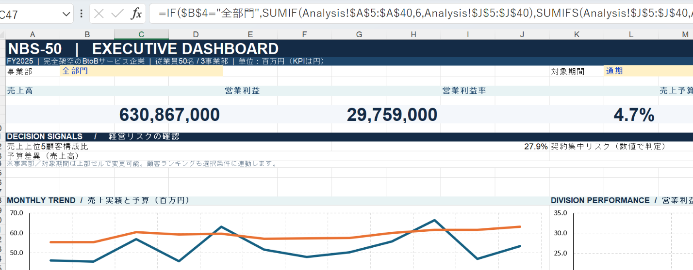
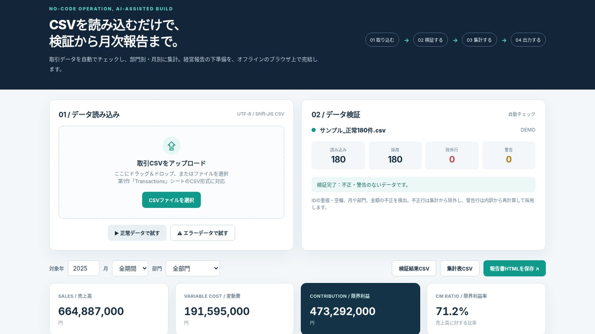
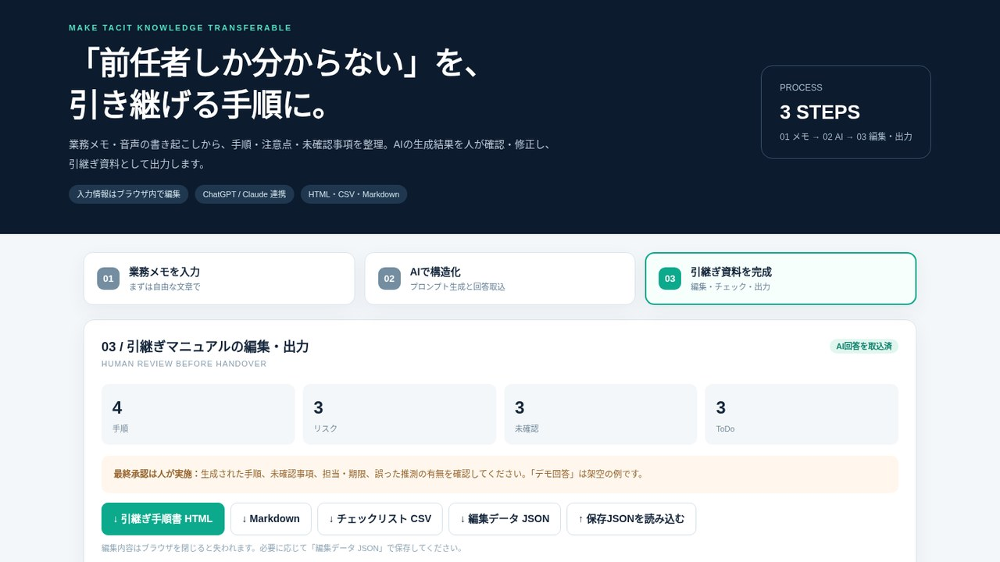
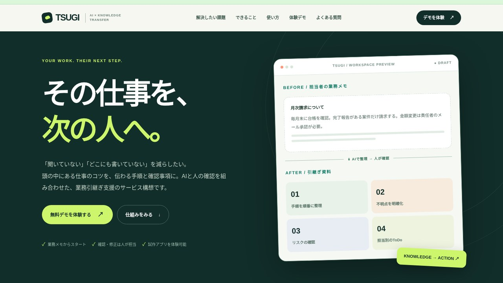

01 / DATA

ANALYTICS / EXCELExcel・PDF原本
経営分析ダッシュボード
架空の取引608件から売上・営業利益・予算差異を分析。部門切替可能な9シートのExcelと、90日改善案をまとめた3ページPDFを制作。
データ設計集計・検算経営分析
AIと話すようになって、世界が広がった。
教育の現場と企業の実務、両方の経験を生かし、生成AIの便利さと可能性を人に伝える仕事を目指しています。
AIと話すようになって、
世界が広がった。
現在、生成AIに強い関心を持ち、毎日新しい使い方を試すことを楽しんでいます。自分の知らなかった分野を学び、考えを整理し、思いついたことを形にできる。その体験が、AIをもっと深く学び、人にも伝えたいと思うきっかけになりました。
約3年間、教育現場で生徒に向き合い、人に伝える仕事を経験しました。
相手の状況を理解し、説明や提案を行ってきました。
現在は事業会社の社長室長として、企業運営に関わる業務に携わっています。
生成AIの基礎と実務への適用を学び、企業向けの導入支援や研修を仕事にしたいと考えています。
このサイトの5作品は、生成AI主導で制作した学習・試作の成果です。自身で一からプログラミングした実績ではありません。制作物を使いながら、業務への活用・品質確認・人への伝え方を学んでいます。
架空企業のデータ分析から提案、業務自動化、AI連携アプリ、サービスの見せ方へ。第1・2作は元のExcel・PDF・PowerPointも閲覧でき、第3〜5作はブラウザで操作できます。

架空の取引608件から売上・営業利益・予算差異を分析。部門切替可能な9シートのExcelと、90日改善案をまとめた3ページPDFを制作。


CSVを取り込むだけで重複・欠損を検証し、部門別・月別の集計と報告書出力まで行う。

業務メモからChatGPT・Claude向けの指示文を作成。AIの回答を編集して、手順書やチェックリストに出力する。

第4作のアプリをサービスとして届けるためのLP。価値提案、利用シーン、体験導線まで設計する。
この5作品は、AIの制作能力と企業実務への応用を学ぶための試作です。完成物だけでなく、入力条件・検証すべき点・限界を確認することを大切にしています。
困りごとと、判断に必要な情報を分ける。
操作・入力・出力・制約を具体化する。
コード・資料・UIのたたき台を作成。
数値整合性と画面・出力を確認する。
再利用しやすい形にまとめ、伝える。
架空データの構成、コードの生成、提案文の推敲、プロンプトの組み立て、デザインの試作などにAIを活用しています。
制作時の自動テストや数値照合の記録と、実際に自分で操作して確認した内容は区別しています。実業務への導入・効果実証は行っていません。
現在の目標は、企業で生成AIを初めて使う方にも、その便利さだけでなく限界や注意点をわかりやすく伝えることです。教員経験で得た「伝える視点」と、企業で働いてきた「現場の視点」を結び付け、実務につながるAI活用の説明や支援に取り組みたいと考えています。
掲載した5作品はAI主導の試作・学習成果で、すべて架空の企業・顧客・データを使用しています。第1作はExcelと改善提案PDF、第2作はPowerPointとPDFの原本を閲覧できます。第3〜5作はブラウザで操作できるデモです。実際の顧客導入や収益改善の実績を示すものではありません。
DATA → PROPOSAL → AUTOMATION → AI WORKFLOW → WEB